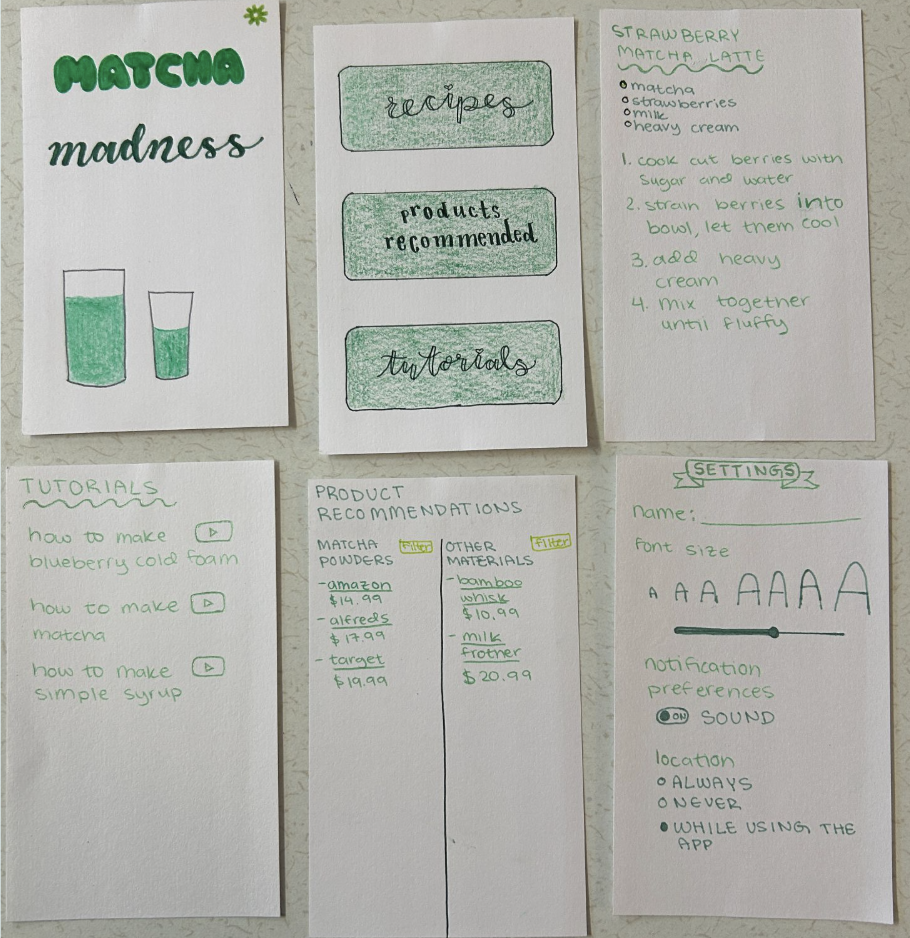

This project demonstrates my growth because I made the app exactly how my paper prototype was. When I first began coding, using the dropdown option was very difficult for me to code and I was able to code it properly in this project. It was hard for me to code how to use the dropdown properly so it can do what it was supposed to without any bugs. An obstacle I faced was figuring out what I wanted it to look and how to use the code to make it just how I imagined it to work. I got past this obstacle by asking my peers for inspiration on what the app could look like and going back to previous levels to help me with the code. I put lots of effort into this project, so it looked exactly like I envisioned it to be. I would add code for the slider tool to actually affect the font size so it can function properly.
